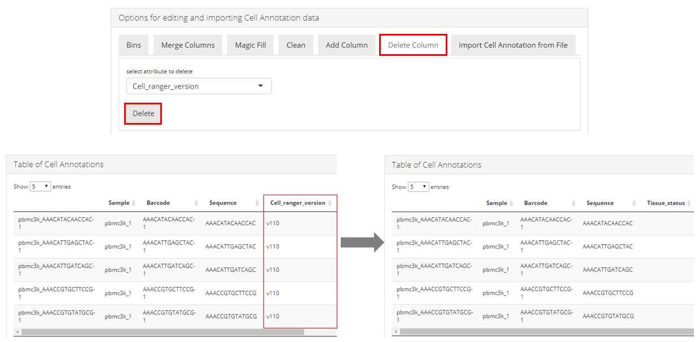

Manage Annotation of Cell and Features
Yichen Wang
Source:vignettes/articles/import_annotation.Rmd
import_annotation.RmdIntroduction
This documentation mainly focuses on the metadata variable that can be projected to each cell or feature, such as IDs and clinical conditions. Single Cell Toolkit (singleCellTK, SCTK) allows users to import and manage cell level and feature level annotations to help with analysis such as filtering the features for less noise, grouping the cells for differential expression analysis, and etc. Many of the analysis steps that SCTK does would also produce annotations, such as the QC metrics, clustering labels and etc.
To view detailed instructions on how to manipulate the annotation, please select ‘Interactive Analysis’ for manipulation through shiny application or ‘Console Analysis’ for manipulation through the R console from the tabs below:
Workflow Guide
After successfully uploading single-cell dataset, users are allowed to manipulate the cell and feature level annotations in the UI. The operation for the two types of annotation is distributed to two separated tabs, which work in the same way. This documentation will only describe the usage for the cell annotation tab.

Users can enter the interface as instructed by the screenshot above. With this interface, users can either upload extra annotations or edit existing annotations. The whole tab consists of three parts:
- The editing area within “Options for editing and importing Cell Annotation data” panel;
- Save/reset button;
- The demonstration area within “Table of Cell Annotations” panel.
Here we will take the example PBMC3K dataset as an example. We imported this dataset through the “Data” -> “Import Single Cell Data” tab, by selecting “Import example datasets” first and using the default “PBMC 3K (10X)” option then.
General Workflow
- Users can start with making any type of operation within “Options for editing and importing Cell Annotation data” panel. The detail of each type of operation will be described later.
- After clicking on “Confirm XX” button that follows the specific inputs, the effect will be immediately shown in the “Table of Cell Annotations”. It is important to know that this table is just for demonstration of the result. Simply clicking on a “Confirm” button does not take any direct effect to the background data object.
- After any changes are confirmed, users must click on “Save” button to take them into effect. A “Reset” button is also provided in case any unwanted operation happens. When users click on the “Reset” button, the annotation table will be reset to the status after the last time users “save” any change. Or if no change has been “saved,” it will be reset to the original status.
Detailed Demonstration
Import New Annotation from File
Users can upload a metadata table that annotates the cells in the dataset with multiple variables. The file has to be in Comma-Separated Values (CSV) format, and have the first header row for the variable names. All cells in the file have to match with the existing dataset in both order and amount, so that SCTK can correctly identify the information and merge it to the background data container.
Users can choose to replace all existing annotation with the new table, by selecting the radio button “Replace Cell Annotations”, or merge the new table into the existing table, by selecting “Add to existing Cell Annotations”. Note that by choosing to merge, SCTK will overwrite the the variables with the same name.
Edit Existing Annotation
Bins
Users can modify an existing column of annotation by changing all values that meet a criteria (alphabetically ordered comparison by “=,” “>,” “<,” “>=” or “<=”) to a new value. In the UI, users can choose the annotation at the selection input “select attribute”, and then set the binning point by selecting an existing value at the selection input “select attribute value” or entering the desired value at “criteria parameter”. The criteria type (comparison symbol) can be selected at “select comparison”. The new value to be filled in to the bin can be entered at “bin name”. Finally, press “Confirm Bin” button to temporarily save the result and preview it in the table at the bottom of the page.
For example: There is an annotation named
"ann1", with values"a", "b", "c", "d", "e", ...in the dataset, and users want to change all the values in"ann1", that come after"d", to"afterD". The steps would be: 1. Choose"ann1"at “select attribute”; 2. Select"d"at “select attribute value” or enter"d"at “criteria parameter”; 3. Select>at “select comparison”; 4. Enter"afterD"at “bin name”.
Merge columns

Users can merge any two columns that exist in the cell annotation table. SCTK merges them in a direct concatenate manner, with allowing setting a customized separator. As shown in the screenshot above, user should enter the “Merge Columns” tab to access this functionality. Different values should be selected for the “Select first column” and Select second column” input. The order of these selections matters as it will determine how the values are ordered in the merged field. It is recommended that users set an _ (underscore) or a - (dash) as the input for “add separator between merged values”. Setting a (space) here will not trigger any direct error but is not a best practice. After determining all the three inputs, users should click on “Confirm Merge” button to make the change. The effect can be immediately observed in the “Table of Cell Annotations” at the bottom, as shown in the lower part of the screenshot above.
Magic Fill
Users can modify a column of annotation (column A) according to another column (column B). The rows that has a certain value in column B will be selected and these rows in column A will be modified to a user-entered value. Select column B at “select attribute column”, and column A at “select column to fill”. The value to be found in column B should be selected at “select attribute value”, and the new value to fill into column A should be entered at “new value”.
Clean

Users can clean up a selected column by removing any “alphabets,” “digits,” “spaces,” or “symbols” from all the values in this column. First users will need to specify the column at “Select attribute column”, and choose what type of clean-up should be performed at “select removal criteria”. Then users must click on “Confirm Clean” to enable the change. The effect can be immediately observed in the “Table of Cell Annotations” at the bottom, as shown in the lower part of the screenshot above.
Add column

Users can add a new column where all values are the same. Users will need to define the name of the new column at “enter new empty column name”, and the value of this column at “default value to fill”. Then users need to click on “Create Column” make the change. The effect can be immediately observed in the “Table of Cell Annotations” at the bottom, as shown in the screenshot above.
Delete column

User can remove an entire column. The unwanted column can be deleted by simply selecting the name of the column at “select attribute to delete” and click on the “Delete” button. The effect can be immediately observed in the “Table of Cell Annotations” at the bottom, as shown in the screenshot above.
SCTK uses the SingleCellExperiment object as the container of users’ datasets. Based on this approach, the cell level and feature level annotations are all stored in the colData slot and rowData slot, respectively.
Here, we present some of the most basic operations on cell annotations, with colData() method. For operations on feature annotations, replace colData() with rowData().
# Get a dataset
library(singleCellTK)
sce <- importExampleData("pbmc3k")
## Add new information to SCE object
n <- seq(ncol(sce)) # A numeric vector of the same size as the number of cells
colData(sce)$n <- n
## Extract information from SCE
barcodes <- colData(sce)$Barcode
## Remove an annotation
colData(sce)$Tissue_status <- NULL